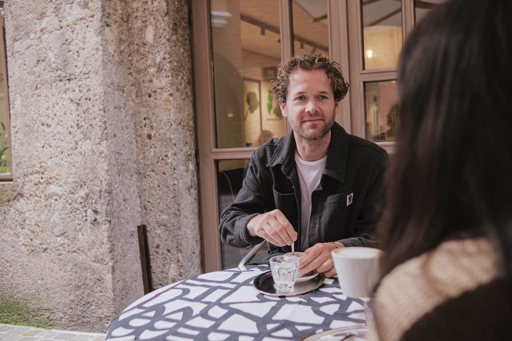

Zack Wilson is a researcher and product designer based in Innsbruck, Austria.
He is currently partner and product design lead at Empatic, where he works on research, strategy and design projects for companies such as TechnoAlpin, Miba, Roche, and Red Bull.
Zack previously worked with human-computer interaction labs in Canada, the Netherlands, and France, researching topics ranging from helping seniors adopt mobile technologies (in collaboration with Samsung), to developing tools to support human creativity in the arts.
He also founded Ameliate, a digital-therapy tool, and continues to experiment with projects across computer science, design, and art.
